from sklearn.inspection import DecisionBoundaryDisplay
from sklearn.linear_model import LogisticRegression
from sklearn.model_selection import StratifiedKFold, cross_val_score
from sklearn.pipeline import make_pipeline
from sklearn.preprocessing import StandardScaler
from sklearn.tree import DecisionTreeClassifier
cv = StratifiedKFold(5, shuffle=True, random_state=0) # how to split: 5 stratified folds
rng = np.random.default_rng(0)
Xx = rng.uniform(-1, 1, (400, 2)) # XOR, as in 5a
yx = (Xx[:, 0] * Xx[:, 1] > 0).astype(int)
xs = rng.uniform(0, 15, (200, 1)) # the step
ys = ((xs[:, 0] > 5) & (xs[:, 0] < 10)).astype(int)
logit = make_pipeline(StandardScaler(), LogisticRegression())
tree = DecisionTreeClassifier(random_state=0)
for name, Xp, yp in [("step", xs, ys), ("XOR ", Xx, yx)]:
print(f"{name}: CV accuracy logistic {cross_val_score(logit, Xp, yp, cv=cv).mean():.3f}"
f" tree {cross_val_score(tree, Xp, yp, cv=cv).mean():.3f}")
def regions(model, X2, y2, ax, title): # decision regions of a 2-feature model
DecisionBoundaryDisplay.from_estimator(model.fit(X2, y2), X2, response_method="predict",
cmap="bwr", alpha=0.25, eps=0, ax=ax)
ax.scatter(X2[:, 0], X2[:, 1], c=y2, cmap="bwr", s=5)
ax.set_title(title, fontsize=9)
ax.set_xticks([]); ax.set_yticks([])
fig, axs = plt.subplots(1, 2, figsize=(6, 2.8))
regions(logit, Xx, yx, axs[0], "logistic regression")
regions(tree, Xx, yx, axs[1], "decision tree")Decision trees
Introduction to Artificial Intelligence and Machine Learning 4
Jiabao Xu
Jiabao.Xu@glasgow.ac.uk
Massimo Vassalli
massimo.vassalli@glasgow.ac.uk
From lines to boxes
5a ended with a model that no penalty could rescue: logistic regression on the XOR pattern, about 0.5 accuracy for every C. That was high bias: the model family \(H\) of straight boundaries is wrong for the problem. Today a family that is not linear at all:
- decision trees: a sequence of yes/no questions on one feature at a time, i.e. a partition of the feature space into boxes
- how a tree is grown from data (CART): candidate splits, impurity, the impurity decrease
- regression trees: means in boxes
- how trees overfit, and how to stop or prune them (the
ccp_alphaof the 5a table) - trees in practice: scaling, missing values, categorical features, probabilities
- interpreting a tree: rules and feature importances (impurity-based and permutation)
Note
Trees and their ensembles (6b) are the core of CW2. Today’s single tree is also the building block of next lecture: its main weakness, instability, is exactly what ensembles fix.
The limits of a line
Two problems that a linear model cannot solve: a step (class 1 only for \(5 < x < 10\)) and the XOR pattern of 5a.
step: CV accuracy logistic 0.615 tree 0.990
XOR : CV accuracy logistic 0.505 tree 0.985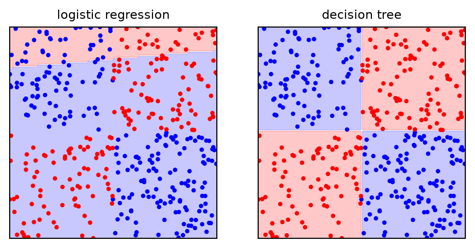
On both problems the tree is almost perfect, without being told about products of features or intervals. Its regions are boxes with sides parallel to the axes. The rest of the lecture explains where the boxes come from.
Twenty questions
A decision tree predicts like the game of twenty questions: a sequence of yes/no questions, each chosen to narrow down the answer, each depending on the previous answers.
- each internal node asks a question about one feature, of the form “\(x_j \le \theta\)?”, with a threshold \(\theta\) learned from the data
- the answer sends the sample to the left (yes) or right (no) child
- the first node is the root; the nodes that ask nothing are the leaves, and carry the prediction
- the depth of a node is the number of questions from the root; the depth of the tree is that of its deepest leaf
- every path from the root to a leaf is a rule: a conjunction of conditions (“\(x_3 \le 0.05\) and \(x_{21} \le 16.8\)”)
The model \(H\) is the set of all such trees: piecewise-constant functions on axis-aligned boxes. Its parameters are discrete (which feature at each node) and continuous (the thresholds \(\theta\) and the leaf values). Do not confuse the split threshold \(\theta\), learned by the tree, with the decision threshold \(t\) of 4a, applied to \(\hat p_i\) after training.
A first tree on breast cancer
The breast cancer data of 3a–5b (malignant = 1), and a tree limited to depth 2:
from sklearn.datasets import load_breast_cancer
from sklearn.model_selection import train_test_split
from sklearn.tree import plot_tree
cancer = load_breast_cancer()
X, y = cancer.data, 1 - cancer.target # 1 = malignant
names = cancer.feature_names
X_train, X_test, y_train, y_test = train_test_split(
X, y, test_size=0.25, stratify=y, random_state=0)
t2 = DecisionTreeClassifier(max_depth=2, random_state=0).fit(X_train, y_train)
fig, ax = plt.subplots(figsize=(8, 3.4))
_ = plot_tree(t2, feature_names=names, class_names=["benign", "malignant"],
filled=True, impurity=True, fontsize=7, ax=ax)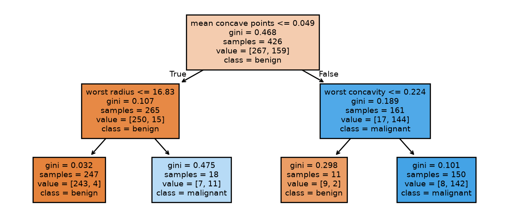
Each box shows the question, the impurity (gini, defined shortly), the number of training samples reaching the node and how they split between the classes (value). The root asks about mean concave points: 265 of the 426 training tumours answer yes, and only 15 of those are malignant. One more question on each side, and two leaves are almost pure: together they hold 397 of the 426 tumours. The colour is the majority class, its intensity the purity.
Reading a tree
To predict, a sample is sent down the tree to a leaf. The predicted class is the majority class of the training samples in that leaf; the predicted probability is their proportion. apply returns the leaf (node number) reached by each sample:
leaf reached : [6 2 2 2 5]
P(malignant) : [0.947 0.016 0.016 0.016 0.182]
predicted / true : [1 0 0 0 0] [1 0 0 0 0]
depth-2 tree: test accuracy 0.923Samples in the same leaf get exactly the same prediction: three of these five fall in the big benign leaf, with \(P(\text{malignant}) = 4/247 = 0.016\). A tree with \(L\) leaves can output at most \(L\) different probabilities. Three questions already give 0.92 on the test set, against 0.97–0.99 for the logistic pipelines of 3a–5a: not a better model, but one that anyone can read.
Boxes in feature space
Two features, three models: the logistic boundary, a tree of depth 3 and a fully grown tree.
j1, j2 = list(names).index("worst radius"), list(names).index("worst concave points")
X2 = X_train[:, [j1, j2]]
fig, axs = plt.subplots(1, 3, figsize=(8, 2.7))
for ax, (title, m) in zip(axs, [("logistic", logit),
("tree, depth 3", DecisionTreeClassifier(max_depth=3, random_state=0)),
("tree, fully grown", DecisionTreeClassifier(random_state=0))]):
acc = cross_val_score(m, X2, y_train, cv=cv).mean()
regions(m, X2, y_train, ax, f"{title}: CV {acc:.3f}")
axs[0].set_xlabel("worst radius"); _ = axs[0].set_ylabel("worst concave points")
Each question cuts one box in two along one axis, so the regions are hyper-rectangles (boxes in \(d\) dimensions). The depth-3 tree approximates the diagonal boundary of logistic regression with a coarse staircase. The fully grown tree adds small boxes around individual training samples, the islands of the third panel: the familiar picture of overfitting (5a), now in the shape of boxes.
Growing a tree: CART
The tree is learned from data by CART (Classification And Regression Trees, Breiman, Friedman, Olshen and Stone, 1984), the algorithm used by scikit-learn:
- start with all the training samples in the root
- for the current node, try every feature \(j\) and every useful threshold \(\theta\), and choose the split \(x_j \le \theta\) that makes the two children purest
- send the samples to the children and repeat step 2 on each child (recursive binary splitting)
- stop when a node is pure, too small, or a limit is reached; the node becomes a leaf
CART is greedy: each split is the best one now, with no look-ahead. Finding the smallest tree that fits the data is NP-complete (Hyafil and Rivest, 1976): the number of possible trees explodes with the depth, so an exact search is out of reach. Greedy growth is fast and works well, but can be fooled: on XOR, no single first split improves purity (each half is still 50:50), so the root split is almost arbitrary and the good splits only appear one level down. Three choices define the algorithm \(A\): which splits to try, how to score them, when to stop.
Candidate splits
For a numerical feature, the question is \(x_j \le \theta\). Only the order of the values matters: any \(\theta\) between two consecutive training values gives the same split. With values \(1.1, 3.8, 4.5, 6.9\), the thresholds \(4.0\) and \(4.4\) separate the samples in the same way. CART tries one threshold per gap, the midpoint between consecutive sorted values:
\[ \theta \in \Big\{\tfrac{1}{2}\big(x_{(r)j} + x_{(r+1)j}\big)\Big\}, \qquad x_{(1)j} \le x_{(2)j} \le \dots \le x_{(n_m)j} \text{ the sorted values in node } m \]
so a node with \(n_m\) samples has at most \(n_m - 1\) candidate thresholds per feature, and \(d(n_m - 1)\) in total: a finite search. Sorting each feature once makes the search fast (about \(d\, n_m \log n_m\) operations per node).
- categorical features: CART can ask “\(x_j \in A\)?” for a subset \(A\) of the categories; scikit-learn’s trees need numbers, so categories are encoded first (3b, and below). The histogram-based boosting of 6b handles categories natively
- the threshold depends only on the order of the values, so the tree is invariant to any monotone transformation of a feature (scaling, logarithms): we will check it
Impurity
A split is good if the children are purer than the parent. Call \(\mathcal{D}_m\) the training samples reaching node \(m\), \(n_m\) their number, and \(\hat p_{mk}\) the proportion of class \(k\) among them (\(k = 1, \dots, c\)). An impurity \(Q_m\) is a function of the proportions that is largest when the classes are evenly mixed (\(\hat p_{mk} = 1/c\)), zero when the node is pure, and symmetric in the classes. Three common choices:
\[ \begin{aligned} \text{Gini:}\quad & Q_m = \sum_{k=1}^{c}\hat p_{mk}(1 - \hat p_{mk}) = 1 - \sum_{k=1}^{c}\hat p_{mk}^2 \\ \text{entropy:}\quad & Q_m = -\sum_{k=1}^{c}\hat p_{mk}\log_2\hat p_{mk} \\ \text{error rate:}\quad & Q_m = 1 - \max_k \hat p_{mk} \end{aligned} \]
In scikit-learn: criterion="gini" (default), "entropy" or "log_loss" (the same). The error rate is not offered, for a reason we will see.
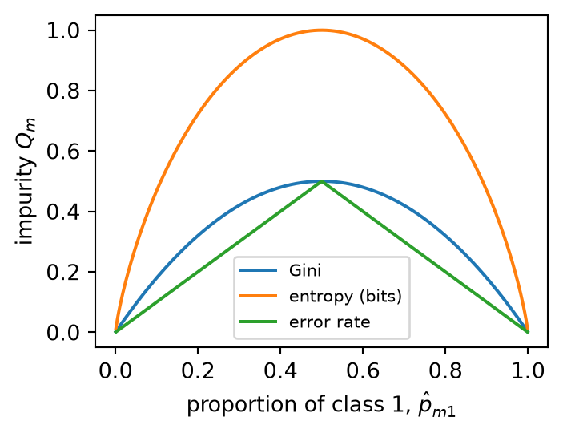
The impurity decrease
A split of node \(m\) into a left child \(L\) and a right child \(R\) is scored by how much it lowers the impurity, weighting each child by its share of the samples:
\[ \Delta Q = Q_m - \frac{n_L}{n_m}\,Q_L - \frac{n_R}{n_m}\,Q_R \]
CART chooses the split \((j, \theta)\) with the largest \(\Delta Q\). The root split of our depth-2 tree, found by hand with the Gini impurity:
def gini(labels):
p = np.bincount(labels, minlength=2) / len(labels)
return 1 - np.sum(p**2)
def decrease(xj, labels, theta): # Delta Q of the split xj <= theta
left = xj <= theta
w = left.mean() # n_L / n_m
return gini(labels) - w * gini(labels[left]) - (1 - w) * gini(labels[~left])
best = (0, None, None)
for j in range(X_train.shape[1]): # every feature
v = np.unique(X_train[:, j])
for theta in (v[:-1] + v[1:]) / 2: # every midpoint
dq = decrease(X_train[:, j], y_train, theta)
if dq > best[0]:
best = (dq, j, theta)
print(f"by hand : {names[best[1]]} <= {best[2]:.4f}, Delta Q = {best[0]:.3f}")
print(f"scikit-learn: {names[t2.tree_.feature[0]]} <= {t2.tree_.threshold[0]:.4f}")
j = best[1]
v = np.unique(X_train[:, j]); ths = (v[:-1] + v[1:]) / 2
fig, ax = plt.subplots(figsize=(4.5, 2.6))
ax.plot(ths, [decrease(X_train[:, j], y_train, th) for th in ths])
ax.set_xlabel(f"threshold on {names[j]}")
_ = ax.set_ylabel(r"$\Delta Q$ (Gini)")by hand : mean concave points <= 0.0489, Delta Q = 0.330
scikit-learn: mean concave points <= 0.0489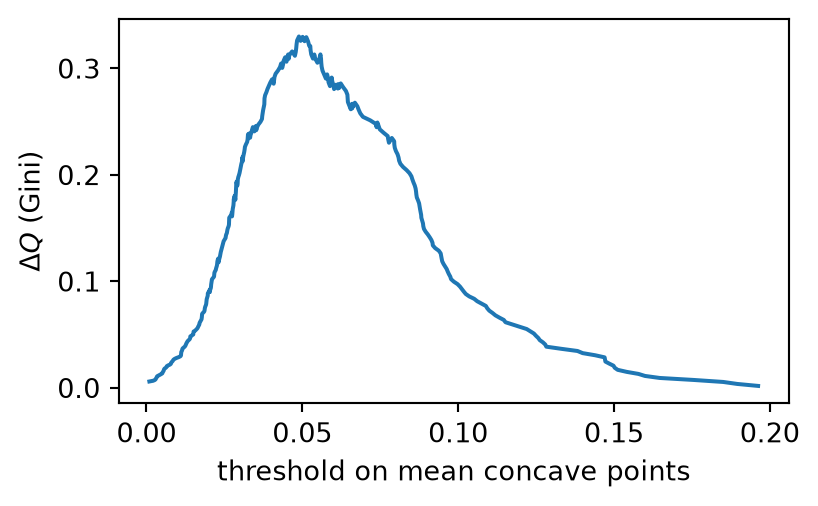
Why not the error rate?
The error rate seems the natural choice: it is what we want to minimise in the end. But it is a poor guide for growing a tree. A node with 400 samples of each class, and two candidate splits:
def impurities(counts): # (Gini, entropy, error) of a node
p = np.array(counts) / np.sum(counts)
pz = p[p > 0]
return 1 - np.sum(p**2), -np.sum(pz * np.log2(pz)), 1 - p.max()
for name, children in [("A: (300, 100) + (100, 300)", [(300, 100), (100, 300)]),
("B: (200, 400) + (200, 0)", [(200, 400), (200, 0)])]:
n_ch = [sum(c) for c in children]
Q = np.sum([np.array(impurities(c)) * nc / 800 for c, nc in zip(children, n_ch)], axis=0)
print(f"{name}: children's weighted Gini {Q[0]:.3f}, entropy {Q[1]:.3f}, error {Q[2]:.3f}")A: (300, 100) + (100, 300): children's weighted Gini 0.375, entropy 0.811, error 0.250
B: (200, 400) + (200, 0): children's weighted Gini 0.333, entropy 0.689, error 0.250Both splits misclassify 200 samples: for the error rate they are equally good. Gini and entropy prefer B, which creates a pure node that needs no further work, while A leaves two mixed nodes. The error rate is flat over large regions (it changes only when the majority class of a child changes), so many useful splits look useless and growth stops too early. Gini and entropy are strictly concave: any split that moves the proportions apart lowers them. For the final pruning and evaluation, the error rate is fine.
Impurities you already know
Gini and entropy are not arbitrary. Suppose that a node predicts, for each of its samples, the class proportions \(\hat p_{mk}\) (exactly what predict_proba returns). The average loss of these predictions over the node is:
- with the Brier score of 4a (summed over the classes): \(\;\sum_k \hat p_{mk}(1 - \hat p_{mk})\), the Gini impurity
- with the log-loss of 3a: \(\;-\sum_k \hat p_{mk}\ln \hat p_{mk}\), the entropy (scikit-learn computes it in bits, \(\log_2\): the same up to the factor \(\ln 2\))
from sklearn.metrics import brier_score_loss, log_loss
p1 = y_train.mean() # root: proportion of malignant
pred = np.full(len(y_train), p1) # the root predicts p1 for every sample
t_ent = DecisionTreeClassifier(criterion="entropy", max_depth=1).fit(X_train, y_train)
print(f"root Gini {t2.tree_.impurity[0]:.4f} 2 x Brier score {2 * brier_score_loss(y_train, pred):.4f}")
print(f"root entropy {t_ent.tree_.impurity[0]:.4f} log-loss / ln 2 {log_loss(y_train, pred) / np.log(2):.4f}")root Gini 0.4679 2 x Brier score 0.4679
root entropy 0.9531 log-loss / ln 2 0.9531(For two classes, the Brier score of 4a is computed on class 1 only, hence the factor 2.) So growing a tree is minimising a familiar loss, one split at a time: each split is the one that most reduces the Brier score (Gini) or the log-loss (entropy) of the tree’s probabilities on the training set. The strategy \(L\) of a tree is a loss, as for every model of the course; only the algorithm (greedy splitting instead of gradient descent) is new. In practice Gini and entropy give very similar trees; Gini is slightly faster (no logarithm).
Regression trees
Nothing in CART depends on the target being a class. For a numerical target, only two things change:
- the leaf value is the mean of the training targets in the leaf, \(\bar y_m = \frac{1}{n_m}\sum_{i \in \mathcal{D}_m} y_i\): the constant that minimises the squared error
- the impurity is the mean squared error around that value, the variance of the node, \(Q_m = \frac{1}{n_m}\sum_{i \in \mathcal{D}_m}(y_i - \bar y_m)^2\): the impurity decrease is the reduction in squared error (
criterion="squared_error", the default)
With criterion="absolute_error" the leaf value is the median and the impurity the mean absolute error (robust to outliers, like MAE in 2b and 4a; slower). The fitted function is piecewise constant: a staircase, one step per leaf.
A staircase on diabetes
The diabetes data of 2b–5a: disease progression against bmi, regression trees of increasing depth.
from sklearn.datasets import load_diabetes
from sklearn.tree import DecisionTreeRegressor
diabetes = load_diabetes()
Xd, yd = diabetes.data, diabetes.target
Xd_train, Xd_test, yd_train, yd_test = train_test_split(
Xd, yd, test_size=0.25, random_state=0)
bmi = Xd_train[:, [2]] # one feature: bmi
xg = np.linspace(bmi.min(), bmi.max(), 500).reshape(-1, 1)
fig, axs = plt.subplots(2, 2, figsize=(5.5, 4), sharex=True, sharey=True)
for ax, depth in zip(axs.ravel(), [1, 2, 3, 8]):
reg = DecisionTreeRegressor(max_depth=depth, random_state=0).fit(bmi, yd_train)
ax.scatter(bmi, yd_train, s=4, alpha=0.4)
ax.plot(xg, reg.predict(xg), "C1")
ax.set_title(f"depth {depth}: {reg.get_n_leaves()} leaves", fontsize=9)
for ax in axs[1]:
ax.set_xlabel("bmi (scaled)")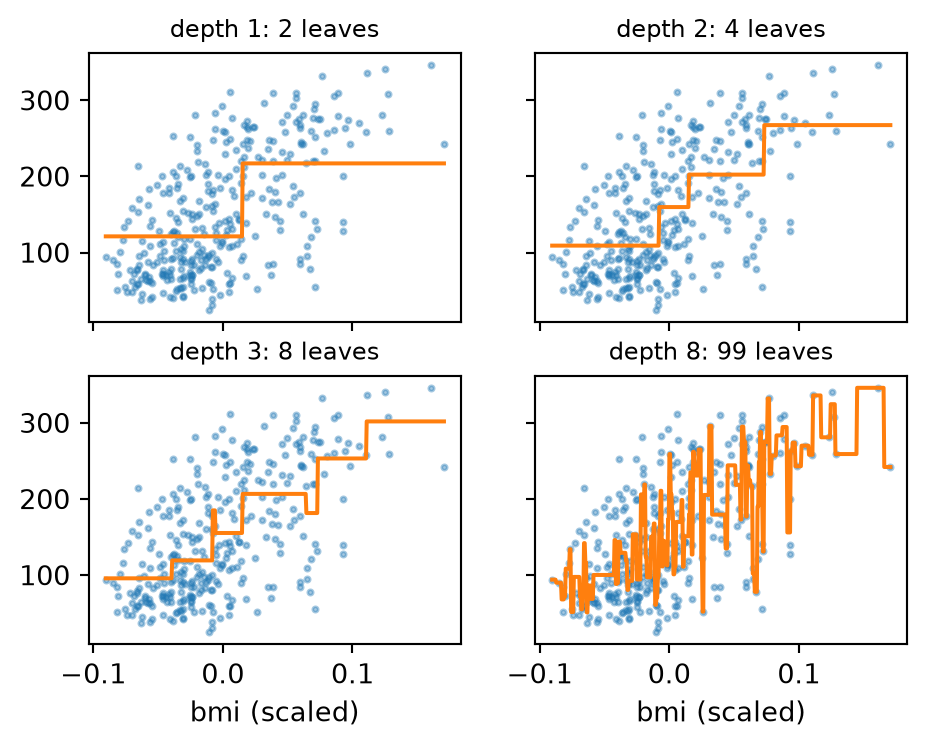
Depth 1 is a single step: “high bmi, faster progression”. Each extra level can double the number of steps. At depth 8 the staircase chases individual patients: 99 steps for 331 samples, about three per step, the variance of 5a in a new form.
Trees do not extrapolate
Outside the range of the training data, a tree predicts the value of the last leaf: a constant. A linear trend learned from \(x \in [0, 10]\) and predicted on \([-3, 13]\):
from sklearn.linear_model import LinearRegression
rng = np.random.default_rng(1)
xl = rng.uniform(0, 10, (60, 1))
yl = 2 * xl[:, 0] + rng.normal(0, 1.5, 60)
xq = np.linspace(-3, 13, 300).reshape(-1, 1)
fig, ax = plt.subplots(figsize=(4.5, 3))
ax.scatter(xl, yl, s=8, color="k")
ax.plot(xq, LinearRegression().fit(xl, yl).predict(xq), label="linear")
ax.plot(xq, DecisionTreeRegressor(max_depth=4).fit(xl, yl).predict(xq), label="tree, depth 4")
ax.axvspan(-3, 0, color="grey", alpha=0.15)
ax.axvspan(10, 13, color="grey", alpha=0.15)
_ = ax.legend(fontsize=8)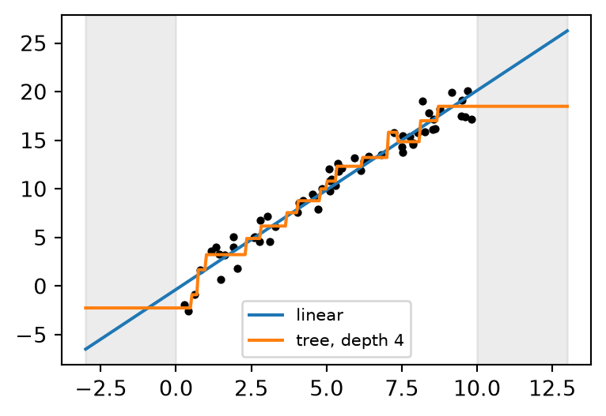
In the shaded regions the tree is flat. Every prediction of a tree is an average of training targets, so it can never leave their range. This matters for trends in time, for dose–response curves, for any problem where new samples may lie beyond the training data; ensembles of trees (6b) inherit the limitation.
Trees and linear models on diabetes
All ten features, regression trees of increasing depth against the linear model, with the folds of 5a:
from sklearn.model_selection import KFold
cv5 = KFold(5, shuffle=True, random_state=0) # regression: 5 shuffled folds
print(f"linear regression : CV R2 = {cross_val_score(LinearRegression(), Xd_train, yd_train, cv=cv5, scoring='r2').mean():.3f}")
for depth in [1, 2, 3, 5, None]:
r2 = cross_val_score(DecisionTreeRegressor(max_depth=depth, random_state=0),
Xd_train, yd_train, cv=cv5, scoring="r2").mean()
print(f"tree, max_depth = {str(depth):4s}: CV R2 = {r2:.3f}")linear regression : CV R2 = 0.522
tree, max_depth = 1 : CV R2 = 0.212
tree, max_depth = 2 : CV R2 = 0.397
tree, max_depth = 3 : CV R2 = 0.349
tree, max_depth = 5 : CV R2 = 0.187
tree, max_depth = None: CV R2 = 0.078The best tree (depth 2, four leaves) reaches about 0.40; the fully grown tree is barely better than predicting the mean. The linear model wins clearly. The effects of bmi, s5 and bp on progression are smooth and roughly additive: a straight line describes them with three weights, a staircase needs many steps, each estimated from few patients. With 331 training samples, the tree cannot afford them. Trees win when the structure is made of thresholds and interactions (XOR, the step); a single tree is rarely the best model for smooth effects. Ensembles (6b) narrow the gap.
Impurity and loss
| Classification tree | Regression tree | |
|---|---|---|
| leaf prediction | majority class; class proportions as probabilities | mean (or median) of the targets |
| impurity \(Q_m\) | Gini or entropy | squared error (or absolute error) |
| equivalent loss | Brier score or log-loss of the leaf proportions | MSE (or MAE) of the leaf values |
| fitted function | constant class in axis-aligned boxes | staircase (piecewise constant) |
| scikit-learn | DecisionTreeClassifier(criterion="gini") |
DecisionTreeRegressor(criterion="squared_error") |
In both cases each split is the one that most reduces the training loss; the tree as a whole is not guaranteed to be the best tree for that loss (greedy search). Everything that follows (stopping, pruning, importances) applies to both.
Overfitting and its control
A tree grown until every leaf is pure fits the training data perfectly:
full = DecisionTreeClassifier(random_state=0).fit(X_train, y_train)
print(f"fully grown tree: depth {full.get_depth()}, {full.get_n_leaves()} leaves")
print(f"training accuracy {full.score(X_train, y_train):.3f}, test accuracy {full.score(X_test, y_test):.3f}, "
f"CV accuracy {cross_val_score(DecisionTreeClassifier(random_state=0), X_train, y_train, cv=cv).mean():.3f}")fully grown tree: depth 6, 18 leaves
training accuracy 1.000, test accuracy 0.944, CV accuracy 0.920Perfect on the training set, as the degree-15 polynomial of 5a, and 0.92–0.94 on new data. Without limits, a tree keeps splitting until every leaf holds a single class, even when that means isolating one sample: a tree is a low-bias, high-variance model. Its complexity is not a fixed number of weights but grows with the data: the number of leaves can reach \(n\).
The validation curve of the depth
from sklearn.model_selection import validation_curve
cv = StratifiedKFold(5, shuffle=True, random_state=0) # how to split: 5 stratified folds
depths = range(1, 11)
tr, va = validation_curve(DecisionTreeClassifier(random_state=0), X_train, y_train,
param_name="max_depth", param_range=depths, cv=cv)
fig, ax = plt.subplots(figsize=(4.5, 3))
ax.plot(depths, tr.mean(axis=1), "o-", markersize=3, label="training")
ax.plot(depths, va.mean(axis=1), "o-", markersize=3, label="validation (CV)")
ax.fill_between(depths, va.mean(axis=1) - va.std(axis=1), va.mean(axis=1) + va.std(axis=1), alpha=0.2, color="C1")
ax.set_xlabel("max_depth")
ax.set_ylabel("accuracy")
_ = ax.legend(fontsize=8)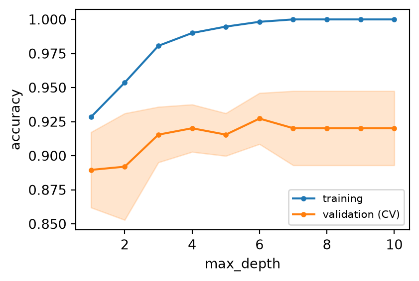
The training accuracy climbs to 1 by depth 7. The validation accuracy rises to about 0.92 at depth 3–4 and then stays flat: beyond that, the extra splits only isolate training samples, and the gap between the curves is the variance of 5a. The band (one standard deviation over the folds) is wider than all the differences between depths 3 and 10: on these data the depth hardly matters, as long as it is not 1 or 2.
Stopping early: pre-pruning
The growth can be stopped by limits on the tree. Two kinds:
| Hyperparameter | Effect | Scope |
|---|---|---|
max_depth |
no node deeper than this | global: stops the whole tree at the same depth |
max_leaf_nodes |
at most this many leaves (best-first growth) | global |
min_samples_split |
a node needs at least this many samples to be split | local: each node decides |
min_samples_leaf |
each child must keep at least this many samples | local |
min_impurity_decrease |
split only if \(\frac{n_m}{n}\Delta Q\) is at least this | local |
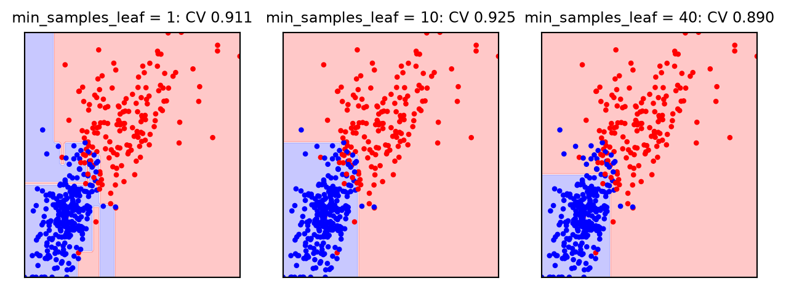
Larger leaves remove the islands: each box must be supported by enough samples. The local limits adapt to the data (dense regions can still be split finely), and are usually better than a global depth. All are hyperparameters, chosen by cross-validation (4b).
Instability
Small changes in the data can change a tree completely. Six trees, each grown on a bootstrap sample (4a) of the same training set:
rng = np.random.default_rng(0)
P = []
for b in range(6):
i = rng.integers(0, len(y_train), len(y_train)) # bootstrap sample
tb = DecisionTreeClassifier(random_state=0).fit(X_train[i], y_train[i])
P.append(tb.predict(X_test))
print(f"tree {b}: root '{names[tb.tree_.feature[0]]}' <= {tb.tree_.threshold[0]:7.3f}, "
f"{tb.get_n_leaves():2d} leaves, test accuracy {tb.score(X_test, y_test):.3f}")
P = np.array(P)
dis = [np.mean(P[a] != P[b]) for a in range(6) for b in range(a + 1, 6)]
print(f"two trees disagree on {np.mean(dis):.1%} of the test samples on average (up to {max(dis):.1%})")tree 0: root 'mean concave points' <= 0.049, 10 leaves, test accuracy 0.937
tree 1: root 'worst concave points' <= 0.147, 10 leaves, test accuracy 0.909
tree 2: root 'worst perimeter' <= 115.000, 13 leaves, test accuracy 0.937
tree 3: root 'mean concave points' <= 0.049, 13 leaves, test accuracy 0.951
tree 4: root 'mean concave points' <= 0.051, 13 leaves, test accuracy 0.923
tree 5: root 'mean concave points' <= 0.049, 11 leaves, test accuracy 0.874
two trees disagree on 8.3% of the test samples on average (up to 13.3%)The root question changes from one sample to another, and everything below it changes with it: an error at the top propagates down the whole tree. The test accuracy ranges from about 0.87 to 0.95, and two trees disagree on about one test sample in twelve. This is high variance in the sense of 5a, and the reason why the predictions of a single tree, and its rules, should not be over-interpreted. It is also an opportunity: unstable models are exactly what averaging (5a) improves. Next lecture: bagging and random forests.
Cost-complexity pruning
Stopping early can be short-sighted: a split that looks useless may enable good splits below it (XOR). The alternative is to grow a large tree and then prune it back. CART measures a subtree \(T\) by its training risk plus a price for each leaf:
\[ C_\lambda(T) = R(T) + \lambda\,\lvert T\rvert, \qquad R(T) = \sum_{m \in \text{leaves}} \frac{n_m}{n}\,Q_m \]
- \(\lvert T\rvert\) is the number of leaves; \(R(T)\) the impurity of the leaves, weighted by their share of the training samples
- \(\lambda \ge 0\) is the price of a leaf. \(\lambda = 0\) keeps the full tree; as \(\lambda\) grows, smaller subtrees win; a very large \(\lambda\) leaves only the root
- it is the regularisation of 5a applied to trees: training loss plus a penalty on complexity, with the strength \(\lambda\) chosen by cross-validation. In scikit-learn,
ccp_alphais our \(\lambda\), asalphawas the \(\lambda\) ofRidge
Weakest-link pruning finds all the subtrees at once. For an internal node \(t\) with the subtree \(T_t\) below it, collapsing \(T_t\) into a single leaf increases the risk by \(R(t) - R(T_t)\) and removes \(\lvert T_t\rvert - 1\) leaves; this pays off when \(\lambda\) exceeds \[ \lambda_t = \frac{R(t) - R(T_t)}{\lvert T_t\rvert - 1}. \] Collapse the node with the smallest \(\lambda_t\) (the weakest link), recompute, repeat. The result is a nested sequence of subtrees, from the full tree to the root, each optimal for a range of \(\lambda\) (Breiman et al., 1984).
The pruning path
cost_complexity_pruning_path returns the values of \(\lambda\) at which the tree changes; we refit for each and cross-validate:
path = full.cost_complexity_pruning_path(X_train, y_train)
lams = path.ccp_alphas[:-1] # drop the last value: the root alone
leaves, cv_mean, cv_std = [], [], []
for lam in lams:
m = DecisionTreeClassifier(ccp_alpha=lam, random_state=0)
s = cross_val_score(m, X_train, y_train, cv=cv)
leaves.append(m.fit(X_train, y_train).get_n_leaves())
cv_mean.append(s.mean()); cv_std.append(s.std())
cv_mean, cv_std = np.array(cv_mean), np.array(cv_std)
fig, ax = plt.subplots(figsize=(4.5, 3))
ax.errorbar(leaves, cv_mean, yerr=cv_std, fmt="o-", markersize=3, capsize=2)
ax.set_xlabel(r"number of leaves $|T|$ (pruned tree)")
_ = ax.set_ylabel("CV accuracy")
print("lambda:", lams.round(4))
print("leaves:", leaves)lambda: [0. 0.0023 0.0023 0.0031 0.0038 0.0043 0.0046 0.006 0.0067 0.0077
0.0091 0.0113 0.0158 0.0279 0.0281]
leaves: [np.int64(18), np.int64(16), np.int64(14), np.int64(13), np.int64(12), np.int64(11), np.int64(10), np.int64(9), np.int64(8), np.int64(7), np.int64(6), np.int64(5), np.int64(4), np.int64(3), np.int64(2)]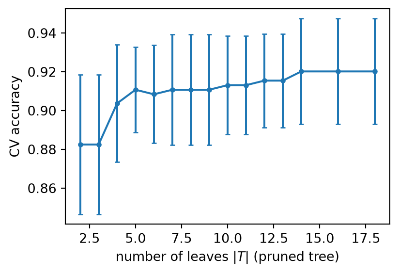
Choosing \(\lambda\): the one-standard-error rule
The CV accuracy is flat: from 4 to 18 leaves all scores are within about 0.02, less than one standard deviation over the folds. GridSearchCV would simply pick the highest mean, here the full tree. Breiman’s one-standard-error rule asks instead for the simplest model whose score is within one standard error of the best: when the data cannot tell two models apart, prefer the smaller one.
best = np.argmax(cv_mean)
se = cv_std[best] / np.sqrt(5) # standard error over 5 folds
ok = np.flatnonzero(cv_mean >= cv_mean[best] - se) # within one SE of the best
lam_1se = lams[ok].max() # largest lambda: smallest tree
pruned = DecisionTreeClassifier(ccp_alpha=lam_1se, random_state=0).fit(X_train, y_train)
print(f"best CV: {cv_mean[best]:.3f} (+/- {se:.3f} SE) with {leaves[best]} leaves")
print(f"1-SE rule: lambda = {lam_1se:.4f}, {pruned.get_n_leaves()} leaves, CV {cv_mean[lams == lam_1se][0]:.3f}")
print(f"test accuracy: full tree {full.score(X_test, y_test):.3f}, pruned tree {pruned.score(X_test, y_test):.3f}")best CV: 0.920 (+/- 0.012 SE) with 18 leaves
1-SE rule: lambda = 0.0113, 5 leaves, CV 0.911
test accuracy: full tree 0.944, pruned tree 0.923The standard error of the mean of the five fold scores is their standard deviation divided by \(\sqrt{5}\) (strictly, fold scores are correlated, so this is a rough yardstick). The pruned tree has a fraction of the leaves at a small cost in CV accuracy, and its test accuracy is checked once, as in 4b. Either choice is defensible; what matters in a report is to state the rule. For a grid search with GridSearchCV, the list path.ccp_alphas is a natural grid for ccp_alpha, and refit can take a function implementing the 1-SE rule.
Trees in practice: no scaling needed
The table of 3b said that trees do not need scaled features. Now we can see why, and check it:
from sklearn.preprocessing import QuantileTransformer
for tf in [StandardScaler(), QuantileTransformer(n_quantiles=100)]:
pipe = make_pipeline(tf, DecisionTreeClassifier(random_state=0)).fit(X_train, y_train)
same_leaves = np.array_equal(pipe[-1].apply(pipe[0].transform(X_train)), full.apply(X_train))
agree = np.mean(pipe.predict(X_test) == full.predict(X_test))
print(f"{type(tf).__name__:20s}: same training partition {same_leaves}, "
f"same test predictions for {agree:.1%} of the samples")StandardScaler : same training partition True, same test predictions for 100.0% of the samples
QuantileTransformer : same training partition True, same test predictions for 99.3% of the samplesEach split compares one feature with a threshold, and only the order of the values matters. Any increasing transformation of a feature (standardising, a logarithm, the quantile transform of 3b) keeps the order, so the tree finds the same partition of the training samples. Standardising (a straight line) also moves the thresholds exactly, and the predictions are identical; a non-linear transform moves the midpoints between training values, so a test sample that falls between two of them can occasionally change side. Scaling is harmless for a tree, and useless; it remains essential for the methods based on distances or penalties (5a, 7a).
Missing values
Since version 1.3, scikit-learn’s trees accept missing values (NaN) directly. Breast cancer with 10% of the entries deleted at random:
from sklearn.impute import SimpleImputer
cv = StratifiedKFold(5, shuffle=True, random_state=0) # how to split: 5 stratified folds
rng = np.random.default_rng(0)
X_miss = X_train.copy()
X_miss[rng.random(X_miss.shape) < 0.1] = np.nan
for name, m in [("tree with NaN ", DecisionTreeClassifier(random_state=0)),
("imputer + indicator + tree", make_pipeline(SimpleImputer(add_indicator=True),
DecisionTreeClassifier(random_state=0)))]:
print(f"{name}: CV accuracy {cross_val_score(m, X_miss, y_train, cv=cv).mean():.3f}")tree with NaN : CV accuracy 0.913
imputer + indicator + tree: CV accuracy 0.894At each candidate split, the samples with a missing value are sent to the left and then to the right child, and the better of the two is kept: the tree learns where missing values go. A sample with NaN at prediction time follows the same route (to the child with more samples if no missing value was seen there in training). Here the native handling is slightly better than the mean imputation of 3b, which replaces 10% of the values by an uninformative constant. When missingness itself is informative (the glucose of the 3b patient table), the tree can use it too.
Categories, imbalance and probabilities
- categorical features: one-hot encoding (3b) works, but splits a category of many levels into many binary columns, each weak on its own. For trees,
OrdinalEncoder(one integer column) is often as good and much more compact: the order is arbitrary, but repeated splits can isolate any group of levels. The histogram boosting of 6b accepts categories natively - class imbalance:
class_weight="balanced"(4a) reweights the samples in the impurity, so splits that isolate the rare class count more - probabilities are leaf proportions, so they are coarse: a fully grown tree has pure leaves and predicts only 0 or 1
from sklearn.metrics import log_loss
t3 = DecisionTreeClassifier(max_depth=3, random_state=0).fit(X_train, y_train)
for name, m in [("fully grown", full), ("pruned (1-SE)", pruned), ("depth 3", t3)]:
p = m.predict_proba(X_test)[:, 1]
print(f"{name:13s}: {len(np.unique(p))} distinct probabilities, test accuracy {m.score(X_test, y_test):.3f}, "
f"log-loss {log_loss(y_test, p):.3f}")fully grown : 2 distinct probabilities, test accuracy 0.944, log-loss 2.016
pruned (1-SE): 4 distinct probabilities, test accuracy 0.923, log-loss 0.268
depth 3 : 5 distinct probabilities, test accuracy 0.958, log-loss 0.158The fully grown tree is as accurate as the others but its log-loss is disastrous: a confident 0 or 1 that turns out wrong costs a huge penalty (4a). If probabilities matter (ranking, costs, calibration), limit or prune the tree, or average many trees (6b), whose averaged proportions are much smoother.
Interpreting trees
A small tree is a set of rules that can be read, checked by a domain expert and even applied by hand:
|--- mean concave points <= 0.05
| |--- worst radius <= 16.83
| | |--- weights: [243.00, 4.00] class: 0
| |--- worst radius > 16.83
| | |--- mean texture <= 16.19
| | | |--- weights: [6.00, 0.00] class: 0
| | |--- mean texture > 16.19
| | | |--- weights: [1.00, 11.00] class: 1
|--- mean concave points > 0.05
| |--- worst concavity <= 0.22
| | |--- weights: [9.00, 2.00] class: 0
| |--- worst concavity > 0.22
| | |--- weights: [8.00, 142.00] class: 1
Each line is a question, each weights line a leaf with the counts of benign and malignant training samples. This transparency is the main reason to use a single tree. Two cautions: the rules describe one tree among many that fit almost equally well (instability), and a feature that does not appear is not necessarily irrelevant: it may be redundant with one that does (as for Lasso in 5a).
Impurity-based feature importance
How much does each feature contribute to a tree? The mean decrease in impurity (MDI) adds up the impurity decreases of all the splits on that feature, each weighted by the share of samples reaching the node:
\[ \mathrm{Imp}(j) = \sum_{m:\ \text{split on } j} \frac{n_m}{n}\,\Delta Q_m \qquad \text{normalised so that } \sum_j \mathrm{Imp}(j) = 1 \]
imp = full.feature_importances_
top = np.argsort(imp)[::-1][:8]
fig, ax = plt.subplots(figsize=(4.5, 3))
ax.barh(range(8)[::-1], imp[top])
ax.set_yticks(range(8)[::-1], names[top], fontsize=8)
_ = ax.set_xlabel("MDI importance (fully grown tree)")
print(f"features used: {np.sum(imp > 0)} of 30; mean concave points: {imp[top[0]]:.2f}")features used: 13 of 30; mean concave points: 0.71
Computed for free while growing the tree (feature_importances_), and the basis of the embedded selection with trees in the table of 5a. One feature dominates: the root split does most of the work, and the many small splits deep in the tree add a little each.
The bias of MDI
MDI is computed on the training data, so it also rewards the splits that overfit. Diabetes, a fully grown regression tree, and two extra columns of pure noise, one continuous and one binary. The permutation importance (next slide) is computed on the test set:
from sklearn.inspection import permutation_importance
rng = np.random.default_rng(0)
noise_tr = np.c_[rng.normal(size=len(Xd_train)), rng.integers(0, 2, len(Xd_train))]
noise_te = np.c_[rng.normal(size=len(Xd_test)), rng.integers(0, 2, len(Xd_test))]
names_d = np.r_[diabetes.feature_names, ["noise (continuous)", "noise (binary)"]]
tn = DecisionTreeRegressor(random_state=0).fit(np.c_[Xd_train, noise_tr], yd_train)
pi = permutation_importance(tn, np.c_[Xd_test, noise_te], yd_test, n_repeats=30, random_state=0)
print(f"fully grown tree: {tn.get_n_leaves()} leaves")
for j in np.argsort(tn.feature_importances_)[::-1][:6].tolist() + [1, 11]: # top 6, then sex and binary noise
print(f"{names_d[j]:19s}: MDI {tn.feature_importances_[j]:.3f} permutation (drop in test R2) {pi.importances_mean[j]:+.3f}")fully grown tree: 317 leaves
s5 : MDI 0.384 permutation (drop in test R2) +0.410
bmi : MDI 0.221 permutation (drop in test R2) +0.150
bp : MDI 0.110 permutation (drop in test R2) +0.252
noise (continuous) : MDI 0.056 permutation (drop in test R2) -0.182
age : MDI 0.051 permutation (drop in test R2) +0.036
s3 : MDI 0.040 permutation (drop in test R2) +0.001
sex : MDI 0.002 permutation (drop in test R2) -0.006
noise (binary) : MDI 0.001 permutation (drop in test R2) -0.004The continuous noise column ranks fourth by MDI, above most of the real features: deep in the tree, among a handful of patients, a random column with hundreds of distinct values always offers some threshold that separates them by chance. Features with many distinct values (continuous, or categorical with many levels) have more chances, and are favoured; the binary columns, the real sex and the binary noise, offer a single split and get almost nothing. On test data the picture flips: shuffling the noise column raises \(R^2\) (negative importance), because the tree had learned rules from it that do not hold on new patients. MDI measures what the tree used to fit the training set, not what helps it predict.
Permutation importance
A model-agnostic measure (Breiman, 2001): take a fitted model and a held-out set; shuffle the values of one feature, breaking its link with the target while keeping its distribution; the importance is the drop in score. Repeat the shuffle several times (n_repeats) to get a mean and a spread. It works for any model and any scoring, so in CW2 it compares features across different models on the same footing:
logit_full = make_pipeline(StandardScaler(), LogisticRegression()).fit(X_train, y_train)
fig, axs = plt.subplots(1, 2, figsize=(6.5, 3), sharey=True)
pis = {}
for ax, (title, m) in zip(axs, [("pruned tree", pruned), ("logistic regression", logit_full)]):
pis[title] = permutation_importance(m, X_test, y_test, n_repeats=30, random_state=0)
top = np.argsort(pis["pruned tree"].importances_mean + pis["logistic regression"].importances_mean)[::-1][:6]
for ax, (title, r) in zip(axs, pis.items()):
ax.barh(range(6)[::-1], r.importances_mean[top], xerr=r.importances_std[top])
ax.set_title(title, fontsize=9)
ax.set_xlabel("drop in test accuracy")
_ = axs[0].set_yticks(range(6)[::-1], names[top], fontsize=7)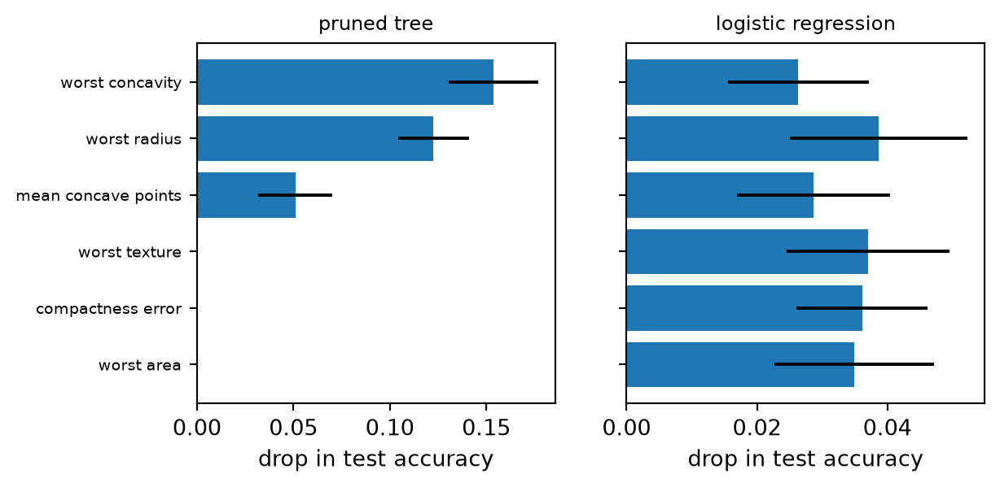
The pruned tree depends on very few features, the logistic model spreads the work over many. Small importances are within the spread of the shuffles. The main caution concerns correlated features: shuffling one of two near-copies (the size features: radius, perimeter, area) leaves the other to carry the information, so both look unimportant. Group correlated features, or interpret with care. And importance on held-out data says what the model uses, not what causes the outcome.
Trees for feature selection
The last entry of the 5a table: tree importances as an embedded selector, inside a pipeline, here in front of the logistic regression:
from sklearn.feature_selection import SelectFromModel
cv = StratifiedKFold(5, shuffle=True, random_state=0) # how to split: 5 stratified folds
emb = make_pipeline(SelectFromModel(DecisionTreeClassifier(max_depth=4, random_state=0)),
StandardScaler(), LogisticRegression())
print(f"tree-selected features + logistic: CV accuracy {cross_val_score(emb, X_train, y_train, cv=cv).mean():.3f}")
emb.fit(X_train, y_train)
print(f"{emb[0].get_support().sum()} features:", ", ".join(names[emb[0].get_support()]))tree-selected features + logistic: CV accuracy 0.941
4 features: mean concave points, worst radius, worst texture, worst concavityBy default SelectFromModel keeps the features with importance above the mean. The tree, like the wrapper of 4b and the L1 model of 5a, looks at the features together and keeps a few complementary ones. The score is below the L1 selection of 5a (0.977 with six features): the features a tree needs for its boxes are not necessarily those a linear model needs, so the selector should match the final model. Because the tree is unstable, so is its selection (the ensembles of 6b give much more stable importances). The three families of 5a now have their tree version: filter (3b), wrapper (4b), embedded (L1 in 5a, trees today).
Trees and linear models
The two families have opposite strengths. A diagonal boundary, easy for a line:
rng = np.random.default_rng(2)
Xg = rng.uniform(-1, 1, (300, 2))
yg = (Xg[:, 0] + Xg[:, 1] > 0).astype(int)
fig, axs = plt.subplots(1, 2, figsize=(6, 2.8))
for ax, (title, m) in zip(axs, [("logistic", logit), ("tree", DecisionTreeClassifier(random_state=0))]):
regions(m, Xg, yg, ax, f"{title}: CV {cross_val_score(m, Xg, yg, cv=cv).mean():.3f}")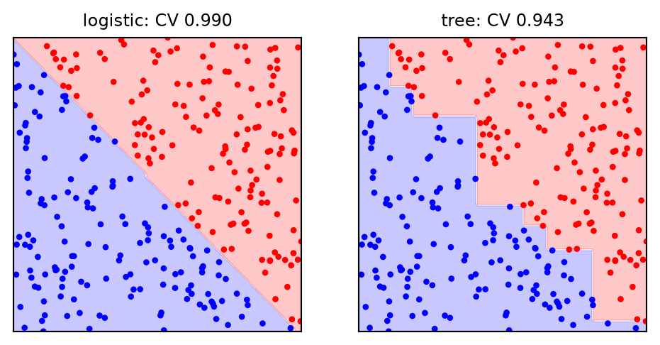
The tree must approximate the diagonal with a staircase of axis-parallel cuts, and the steps fall wherever the training samples happen to be. A rotation of the features (PCA, 5b, or an engineered \(x_1 + x_2\)) would solve it with one split. Oblique trees, which split on combinations of features, exist but are rarely used; the usual answer is an ensemble of many trees, whose staircases average into a smoother boundary (6b).
Strengths and limitations
| Strengths | Limitations |
|---|---|
| interpretable rules (small trees) | unstable: small data changes, different tree (high variance) |
| non-linear boundaries and interactions, without feature engineering | axis-parallel boxes: diagonal or smooth effects need many steps |
| no scaling; insensitive to monotone transforms and to outliers in \(\mathbf{X}\) | piecewise constant: coarse probabilities, no extrapolation |
| numerical and categorical features, missing values | greedy: not the best tree, may miss splits that pay off later (XOR) |
| fast to train and to predict | overfit easily: must be limited or pruned |
Other tree algorithms: ID3 (Quinlan, 1986) and its successor C4.5 (1993), which use entropy, multiway splits on categorical features and their own pruning; CHAID (Kass, 1980), based on \(\chi^2\) tests. scikit-learn implements an optimised version of CART. Monotonic constraints (monotonic_cst) force the prediction to increase (or decrease) with a feature, useful when the physics or the clinic demands it.
Summary: decision trees as (H, L, A)
| Element | Classification tree | Regression tree |
|---|---|---|
| Model \(H\) | piecewise-constant function on axis-aligned boxes; class proportions in each leaf | piecewise-constant function (staircase); mean in each leaf |
| Strategy \(L\) | Gini (Brier) or entropy (log-loss) of the leaves, \(+ \lambda\,\lvert T\rvert\) for pruning | squared (or absolute) error of the leaves, \(+ \lambda\,\lvert T\rvert\) |
| Algorithm \(A\) | greedy recursive binary splitting (CART), then weakest-link pruning | same |
| Hyperparameters | max_depth, min_samples_leaf, max_leaf_nodes, ccp_alpha (\(\lambda\)), criterion |
same |
| scikit-learn | DecisionTreeClassifier |
DecisionTreeRegressor |
Compared with the linear models of weeks 2–5, the model family is radically different (boxes, not hyperplanes) and the algorithm is a combinatorial search, not an optimisation of continuous weights. The strategy is familiar: a training loss, plus a penalty on complexity whose strength is chosen by cross-validation. The bias–variance trade-off reads in the depth, the leaf size and \(\lambda\).
What to look for
When you use a decision tree, check:
- that it is limited (
min_samples_leaf,max_depth) or pruned (ccp_alpha), with the hyperparameter chosen by cross-validation, and the selection rule stated (best mean or one standard error) - the validation curve of the depth or of \(\lambda\): where does the gap between training and validation open?
- that it is compared with a linear baseline (and the dummy baseline of 4a): a tree is not automatically better
- the probabilities: if you need them (ROC, log-loss, costs), a fully grown tree gives only 0 and 1
- the stability of the tree and of its importances (refit on bootstrap samples or CV folds) before interpreting the rules
- permutation importance on held-out data rather than MDI alone, and caution with correlated features
- that the problem does not require extrapolation beyond the training range
Suggested readings and activities
Suggested readings:
- Trees in The Elements of Statistical Learning, section 9.2 (CART, impurity, cost-complexity pruning), and the chapter on decision trees in Machine Learning with Python.
- The scikit-learn user guide on decision trees (including missing values and the mathematical formulation), on cost-complexity pruning and on permutation importance.
Suggested activities:
- Grow the XOR tree with
max_depth=2and look at the root split withexport_text: why does the greedy search sometimes fail at this depth? - Repeat the pruning path with
criterion="entropy": do the selected trees change? - Fit a regression tree with
min_samples_leaftuned by CV on diabetes and compare it with the Ridge model of 5a. - Refit the pruned breast cancer tree on 100 bootstrap samples: how often is each feature at the root?
Coursework: CW2
For CW2 (2–3 scikit-learn tools on your CW1 dataset, critical comparison, best pipeline: deadlines and the brief on Moodle), today’s concepts the coursework expects you to use and discuss:
- decision trees (
DecisionTreeClassifier,DecisionTreeRegressor) as a candidate model, compared with the linear models of CW1 and with a baseline - the complexity of the tree (
max_depth,min_samples_leaf,ccp_alpha) chosen by cross-validation, with a validation curve and a stated selection rule - interpretation: the rules of a small tree, and feature importances, permutation importance on held-out data in particular
- bias and variance as the language to explain why a tree generalises better or worse than a linear model on your data
Tip
Next lecture: ensembles (bagging, random forests, boosting), the tools that turn unstable trees into some of the strongest models for tabular data.

ENG4200 AI4